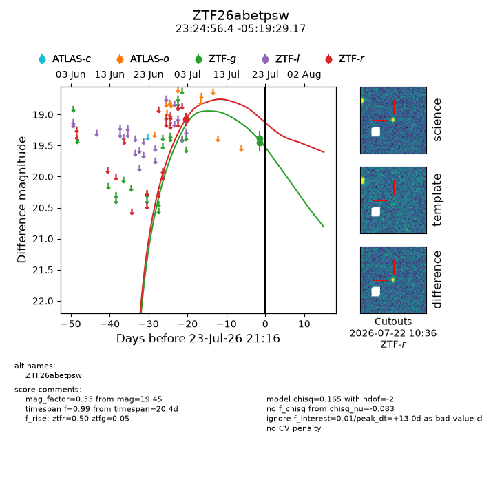
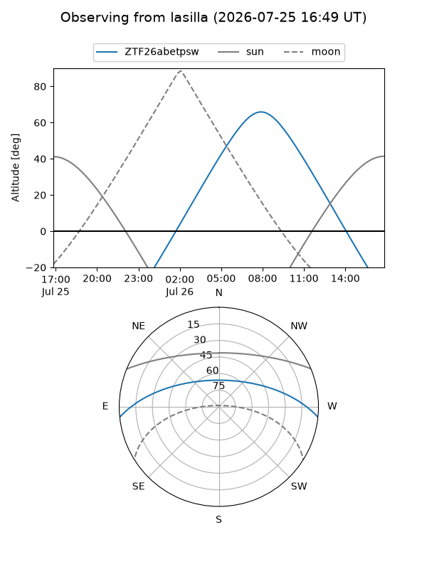
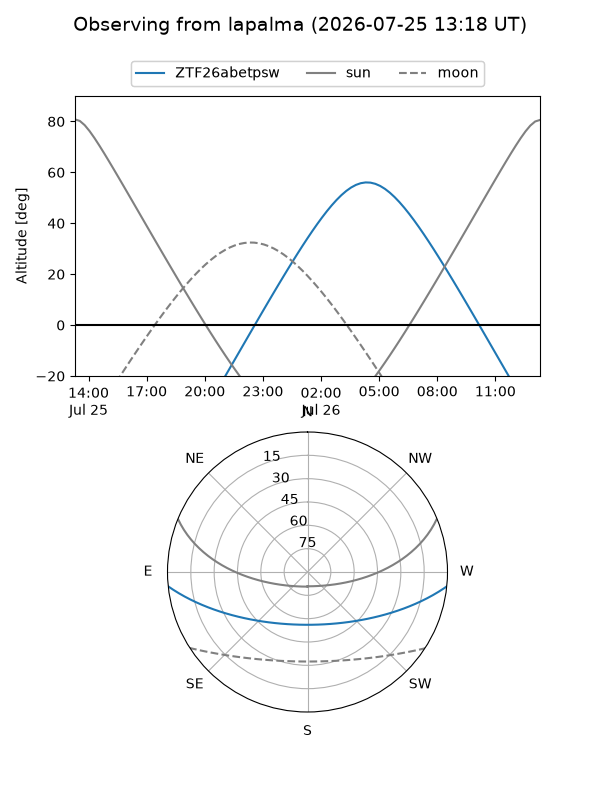
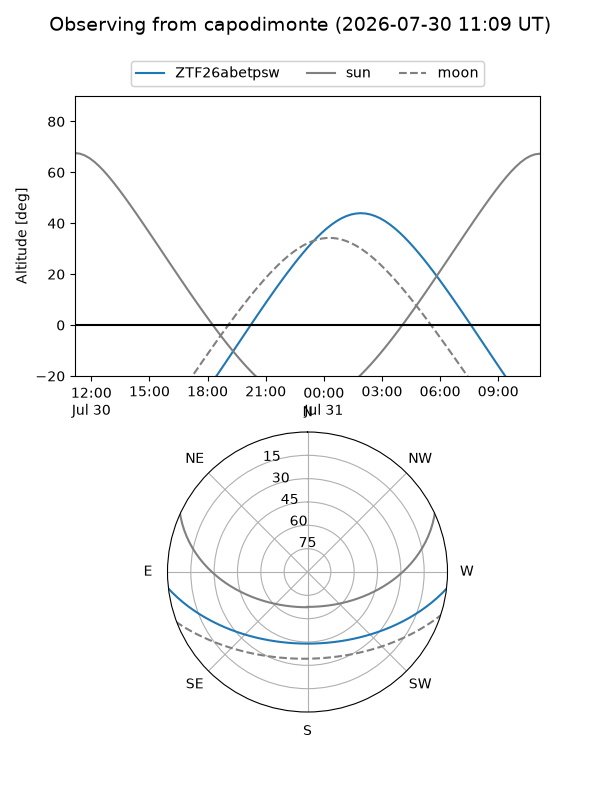
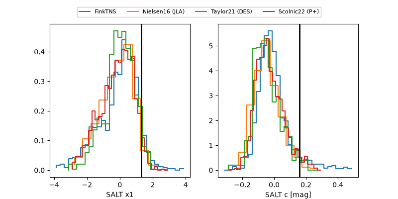

ZTF26abetpsw
Target ZTF26abetpsw at 2026-07-23 21:19
Aliases and brokers:
FINK-ZTF: ztf.fink-portal.org/ZTF26abetpsw
Lasair-ZTF: lasair-ztf.lsst.ac.uk/objects/ZTF26abetpsw
ALeRCE-ZTF: alerce.online/object/ZTF26abetpsw
Direct TNS query: direct search
alt names
ZTF26abetpsw (ztf,fink_ztf)
Coordinates:
equatorial (ra, dec) = 351.2350,-5.32477
equatorial (HMS+DMS) = 23:24:56.40,-05:19:29.17
galactic (l, b) = (75.7057,-60.00802)
Flags:
peak dt: +13.0
Photometry:
last ztfg=19.45, ztfr=19.08
2 ztfg, 1 ztfr detections
Lightcurve

Visibility



Additional plots
